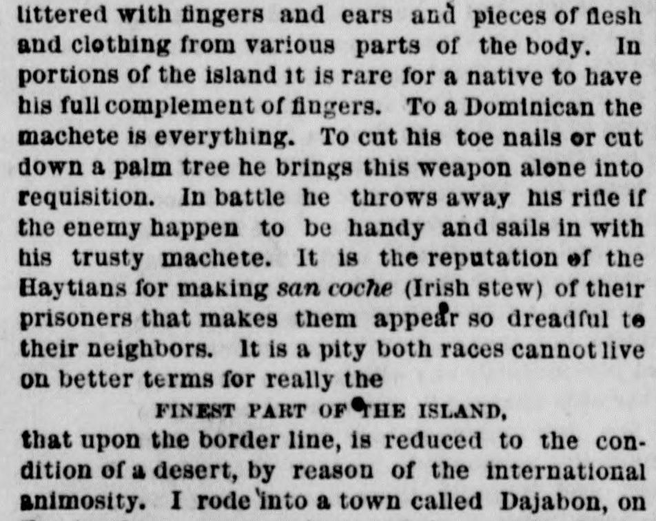

It is a pity both races cannot live on better termsEs una lástima que ambas razas no puedan vivir en mejores términos
The New York Herald. New York [N.Y.], April 22, 1873. Page 6. View the originalVer el original

 See the full pageVer la página completa
See the full pageVer la página completa
According to the New York Herald on April 22, 1873, international animosity and border warfare between Hayti and the Dominican Republic had depopulated the border region, reducing towns like Dajabon to near-desolation. While Hayti's President Saget unsuccessfully sought a treaty of amity and commerce through the British consul general, Dominican leader Baez allegedly maintained hostilities to frighten Dominicans into supporting annexation to the United States. Additionally, the article contrasted the two nations' populations, noting that Hayti had a larger population and smaller territory with a seven-eighths black demographic, whereas the Dominican Republic was three-quarters Creole, with Creoles serving as the ruling and aristocratic element in both republics.Según The New York Herald del 22 de abril de 1873, las querellas internacionales y las guerras de frontera entre Haití y la República Dominicana habían despoblado la comarca limítrofe, sumiendo en la ruina y el abandono a villas como Dajabón. En tanto el presidente haitiano Saget gestionó infructuosamente un convenio de concordia y comercio con la mediación del cónsul general británico, se aseguraba que el gobernante dominicano Báez sostenía los enconos armados para intimidar a sus conciudadanos y forzarlos a cobijarse bajo la anexión a los Estados Unidos. El artículo contrastó asimismo la composición demográfica de ambos estados, refiriendo que Haití contaba con una población más densa en un territorio menor constituida en sus siete octavas partes por negros, en tanto que la República Dominicana era en sus tres cuartas partes criolla, integrando los criollos el estamento dirigente y aristocrático en ambas repúblicas.
FULL TEXT:TEXTO COMPLETO:
...people of enterprise and intelligence like these cowardly and ignorant Dominicans. Here not one man in a hundred can read and write. Over there you will find a common school system and hundreds of people who have received an academic education in England and France. You will find also, that the people are industrious and that they manufacture something else besides rum, the only thing made by native hands in all Dominican territory.' Such is a sample of the manner these interesting people talk of each other, and in consequence of the mutual ill-feeling there is...gente de empresa e inteligencia como estos dominicanos cobardes e ignorantes. Aquí ni un hombre de cada cien puede leer y escribir. Allá encontrará un sistema de escuelas comunes y cientos de personas que han recibido una educación académica en Inglaterra y Francia. Encontrará también, que la gente es industriosa y que manufactura algo más además de ron, la única cosa hecha por manos nativas en todo el territorio dominicano.' Tal es una muestra de la manera en que esta interesante gente habla entre sí, y a consecuencia del mutuo mal sentimiento hay
NO TREATY OF AMITY AND COMMERCENO HAY TRATADO DE AMISTAD Y COMERCIO
between them. The Dominicans both hate and fear their neighbors, and frighten their children to bed with the dread name of Haytians. The sentiment of fear on the part of the Dominicans is not inspired by the superior prowess of the Haytians. On the contrary the former are the better soldiers, and the latter know it so well that in a contest of equal numbers they invariably decline coming to close quarters, so great is theirentre ellos. Los dominicanos odian y temen a la vez a sus vecinos, y asustan a sus hijos a la cama con el temido nombre de haitianos. El sentimiento de temor por parte de los dominicanos no está inspirado por la superior destreza de los haitianos. Por el contrario, los primeros son los mejores soldados, y los últimos lo saben tan bien que en una contienda de números iguales invariablemente declinan llegar a los cuartos cercanos, tan grande es su
TERROR OF THE MACHETE,TERROR DEL MACHETE,
in the use of which no people excel the Dominicans. I saw a two-minute fight at Monte Cristi between a couple of Dominicans armed with machetes, and in that brief time the ground was littered with fingers and ears and pieces of flesh and clothing from various parts of the body. In portions of the island it is rare for a native to have his full complement of fingers. To a Dominican the machete is everything. To cut his toe nails or cut down a palm tree he brings this weapon alone into requisition. In battle he throws away his rifle if the enemy happen to be handy and sails in with his trusty machete. It is the reputation of the Haytians for making san coche (Irish stew) of their prisoners that makes them appear so dreadful to their neighbors. It is a pity both races cannot live on better terms for really theen cuyo uso ningún pueblo supera a los dominicanos. Vi una pelea de dos minutos en Monte Cristi entre un par de dominicanos armados con machetes, y en ese breve tiempo el suelo estaba cubierto de dedos y orejas y pedazos de carne y ropa de varias partes del cuerpo. En porciones de la isla es raro que un nativo tenga su complemento completo de dedos. Para un dominicano el machete es todo. Para cortarse las uñas de los pies o cortar una palmera trae esta arma solamente a requisición. En batalla arroja su fusil si el enemigo está a la mano y se abalanza con su fiel machete. Es la reputación de los haitianos de hacer san coche (estofado irlandés) de sus prisioneros lo que los hace parecer tan terribles a sus vecinos. Es una lástima que ambas razas no puedan vivir en mejores términos porque realmente la
FINEST PART OF THE ISLAND,LA PARTE MÁS FINA DE LA ISLA,
that upon the border line, is reduced to the condition of a desert, by reason of the international animosity. I rode into a town called Dajabon on the borders, one evening, and in a collection of about two hundred houses, built of mahogany, found but one occupied. The marauding raids on either side had depopulated this and six other small towns on a line of forty miles back in the interior. Saget, the President of Hayti, like...la que está sobre la línea fronteriza, está reducida a la condición de un desierto, por razón de la animosidad internacional. Entré a caballo en un pueblo llamado Dajabón en las fronteras, una tarde, y en una colección de unas doscientas casas, construidas de caoba, encontré solo una ocupada. Las incursiones merodeadoras de ambos lados habían despoblado este y otros seis pueblos pequeños en una línea de cuarenta millas hacia el interior. Saget, el Presidente de Haití, como...